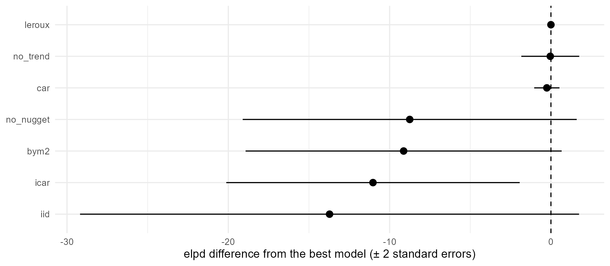

The model of tutorial 1 made three choices without comment: a Leroux prior in space, a linear trend in time, and a nugget for the scatter between surveys. Each could have been made differently. This tutorial uses the same crt K76T data to show how to:
- choose another spatial prior;
- switch parts of the model off, or hold a parameter at a value;
- add a main effect in time, so that the regional curve can bend;
- score each fit by how well it predicts the data it was not given,
with
loo(), and line the fits up withcompare_models().
1. The data
As in tutorial 1:
iso3 <- c("DJI", "ERI", "ETH", "KEN", "SOM", "SSD", "SDN", "UGA")
adm1 <- sf::st_as_sf(geodata::gadm(iso3, level = 1, path = tempdir(), version = "4.1", resolution = 2))
lakes <- rnaturalearth::ne_download(scale = 10, type = "lakes", category = "physical",
returnclass = "sf", destdir = tempdir())
crs <- "+proj=laea +lat_0=8 +lon_0=37 +units=m"
adm1 <- sf::st_make_valid(sf::st_transform(adm1, crs))
lakes <- sf::st_make_valid(sf::st_transform(lakes, crs))
lakes <- lakes[as.numeric(sf::st_area(lakes)) > 1e9, ]
water <- sf::st_intersection(sf::st_union(lakes), sf::st_union(adm1))
adm1 <- sf::st_difference(adm1, water)
adm1 <- adm1[adm1$ENGTYPE_1 != "Water body", ] # what is left of Uganda's lake units
fr <- areal_frame(adm1, id = "GID_1", groups = c(country = "COUNTRY"), link_within = "country",
verbose = FALSE)
tf <- time_frame(1989, 2024, "month")
d <- areal_data(igad_crt76t, fr, tf, y = "positive", k = "tested",
coords = c("longitude", "latitude"), date = "collection_day", verbose = FALSE)2. Five spatial priors
At each time step, the field is given a prior on the adjacency graph:
how alike neighbouring units should be.
fit_areal(spatial = ) offers five. All of them have a
scale, sigma, and all but two a parameter
rho_s for the strength of spatial dependence, with
rho_s = 0 meaning independent units. In plain words:
-
"leroux", the default. Each unit is a compromise between its neighbours and its own independent value, andrho_ssets the balance: near 1, neighbours are strongly alike. -
"bym2": the field is the sum of a smooth part and an independent part.sigmais roughly the field’s standard deviation in any one unit, andrho_sis the share of its variance in the smooth part. It is the same idea as Leroux, parameterised so that the two numbers are easier to read and to give priors to.rho_sdoes not mean the same as in Leroux, so the two fits’ values are not comparable. -
"car", the proper CAR. Each unit is drawn towardsrho_stimes the mean of its neighbours. Units with fewer neighbours, often on borders and coasts, vary more. -
"iid": independent units, Leroux withrho_sfixed at 0. A unit learns nothing from its neighbours, only from its own surveys in nearby months. A unit never surveyed gets the regional mean, from the trend, and a wide interval. -
"icar", the intrinsic CAR: Leroux withrho_sfixed at 1, the strongest smoothing. The field then sums to zero over the units at every time step. It can move one region up and another down, but not the whole map, so the region’s level and its changes over time come from the fixed effects alone. Here, that is one straight line on the logit scale.
The formulas are on the Method page. All five cost the same to fit. With the default settings, each fit takes about as long as tutorial 1’s:
fits <- list(
leroux = fit_areal(d),
bym2 = fit_areal(d, spatial = "bym2"),
car = fit_areal(d, spatial = "car"),
iid = fit_areal(d, spatial = "iid"),
icar = fit_areal(d, spatial = "icar")
)
sapply(fits, function(f) diagnose(f)$pass)
#> leroux bym2 car iid icar
#> TRUE TRUE TRUE FALSE TRUEThe iid fit fails diagnose() at the default length:
subset(summary(fits$iid)$table, select = c(variable, mean, q2.5, q97.5, rhat, ess_bulk))
#> variable mean q2.5 q97.5 rhat ess_bulk
#> 1 sigma 2.5726047 2.111745660 3.1373310 1.0046295 1124.9427
#> 2 rho_t 0.9943321 0.990038308 0.9973716 1.0038413 825.5162
#> 3 sigma_n 0.4109566 0.006037493 0.7644747 1.0412713 118.5460
#> 4 intercept 1.5458714 0.877584756 2.2848114 1.0012610 1011.9314
#> 5 trend -3.8673249 -4.947927191 -2.7801337 0.9978094 941.9405The nugget’s effective sample size is low. With independent units, the field and the nugget are both independent from one unit to the next, and only the field’s memory from month to month tells them apart. As in tutorial 2, the remedy is a longer run:
fits$iid <- fit_areal(d, spatial = "iid", control = list(n_iter = 10000, n_burn = 2000))
diagnose(fits$iid)$pass
#> [1] TRUEBefore any scores, compare what the priors make of the data. The clearest difference is in the trend:
coef_of <- function(f, v) unlist(subset(summary(f)$table, variable == v, c(mean, q2.5, q97.5)))
round(t(sapply(fits, coef_of, "trend")), 2)
#> mean q2.5 q97.5
#> leroux -2.57 -4.99 -0.17
#> bym2 -3.76 -4.69 -2.79
#> car -2.45 -4.66 0.04
#> iid -3.85 -4.92 -2.76
#> icar -3.87 -4.82 -2.97Under Leroux and the proper CAR, the trend is uncertain: its interval
runs from about -5 to -0.2. Under BYM2, iid and ICAR it is steeper and
much better determined, at about -3.9. The reason is the field’s
region-wide component. With rho_s near 1, as here, the
Leroux and proper CAR fields can move the whole region up or down
together, and that component bends the regional curve away from the
straight line of the trend. The other three priors have almost no
region-wide component (ICAR has none at all), so the regional curve is
the trend: a straight line on the logit scale, which the data then pin
down. The decline of K76T need not have been a straight line, so the
difference matters. Section 5 asks which the data prefer.
3. Switching parts of the model off
The other parts of the model are switched off in the call:
-
No nugget:
nugget = FALSE. Every difference between surveys must then be explained by the smooth field. -
No trend:
formula = ~ 1, an intercept only. The field must then carry the region-wide decline as well as the local departures from it. -
A parameter held at a value:
fixed, a list of values for any ofsigma,rho_s,rho_tandsigma_n. Withrho_t = 0, the field has no memory from one month to the next: each month’s map is independent of the last, apart from the trend.
fits$no_nugget <- fit_areal(d, nugget = FALSE)
fits$no_trend <- fit_areal(d, formula = ~ 1)
fits$rho_t_0 <- fit_areal(d, fixed = list(rho_t = 0), control = list(n_iter = 10000, n_burn = 2000))
sapply(fits[c("no_nugget", "no_trend", "rho_t_0")], function(f) diagnose(f)$pass)
#> no_nugget no_trend rho_t_0
#> TRUE TRUE TRUE
summary(fits$rho_t_0)
#> <stareal_fit summary> 264 observed cells; 4 chains, 8000 iterations after burn-in
#> hyperparameters from the trace (32000 draws), fixed effects from the 1000 stored draws
#>
#> variable mean sd q2.5 q50 q97.5 rhat ess_bulk ess_tail
#> sigma 2.590 0.5020 1.630 2.590 3.580 1.002 1653 1225
#> rho_s 0.971 0.0245 0.920 0.976 0.991 1.001 3491 4683
#> sigma_n 1.380 0.4610 0.191 1.440 2.110 1.003 852 294
#> intercept 1.520 0.2670 0.981 1.510 2.070 1.002 987 987
#> trend -3.190 0.5640 -4.260 -3.190 -2.100 1.001 975 894
#>
#> acceptance after burn-in: centred 0.22, surrogate 0.22; 0.0171 s per iteration
#> for every observed cell and a verdict, use diagnose()A fixed parameter is not sampled, so it is missing from the summary,
the trace plots and diagnose(). The rho_t = 0
fit is given the longer run from the start. Without memory in time, the
field and the nugget are hard to tell apart, as for the iid prior: only
the field’s correlation in space separates them, and the default length
is not enough.
4. Scoring a fit: loo()
diagnose() says whether a fit has converged, not whether
its model is good. A model is good if it predicts data it has not seen.
Leave-one-out cross-validation asks that of each observed cell (an area
in a month, all its surveys together): leave the cell out, fit the rest,
and score the cell’s surveys against the prediction. Done exactly, that
is 264 refits. loo()
approximates it from the one fit, in seconds:
l <- loo(fits$leroux)
l
#> <stareal_loo> integrated PSIS-LOO over 264 observed cells, 1000 draws
#> elpd_loo -715.4 (se 28.8); p_loo 29.1; 1 cell with Pareto k > 0.67How to read it:
-
elpd_loois the expected log predictive density: the sum over the cells of the log probability that the model, without the cell, gives to its surveys. Higher is better. On its own it means little. It is for comparing models fitted to the same data. -
p_loois the effective number of parameters. The model has a latent value for each of 264 cells and six parameters, but the prior ties them together, so the model is about as flexible as one with 29 free parameters. -
Pareto k is a check of the approximation in each
cell. Above the threshold, that cell’s estimate is unreliable. A few
such cells are normal: they are cells unlike the rest, whose own surveys
carry most of the information about them. Many would call for exact
cross-validation, with
crossval().
The cells’ scores are in l$cells. The worst-predicted
cells are the surveys that disagree with their neighbours and their own
unit’s past:
head(l$cells[order(l$cells$elpd_loo), c("id", "time", "y", "k", "elpd_loo", "pareto_k")])
#> id time y k elpd_loo pareto_k
#> 19 ETH.8_1 2014-07 28 48 -11.211953 0.7364905
#> 195 UGA.2_1 2013-07 485 599 -8.380723 0.5070969
#> 14 ETH.7_1 2010-07 31 195 -6.895350 0.1341652
#> 146 SSD.1_1 2001-07 26 85 -6.565051 0.4990686
#> 254 UGA.56_1 2010-01 206 223 -6.344417 0.5544979
#> 157 SDN.2_1 2000-12 119 147 -6.295725 0.6193091loo()
integrates each cell’s own latent value out before the importance
sampling (the Method page has the
details). Plain PSIS-LOO, as in the loo package, is
unstable for models like this one. The result is still a
loo object, so the loo package’s tools, such
as loo::loo_compare(), work on it.
5. Comparing models
compare_models() puts the fits side by side, best first.
It computes loo() for
each, and compares them cell by cell:
cmp <- do.call(compare_models, fits)
cmp[, c("model", "spatial", "nugget", "pass", "elpd_loo", "elpd_diff", "se_diff", "p_loo", "n_k_high")]
#> model spatial nugget pass elpd_loo elpd_diff se_diff
#> 1 leroux leroux TRUE TRUE -715.4092 0.0000000 0.0000000
#> 2 no_trend leroux TRUE TRUE -715.4497 -0.0404925 0.8974943
#> 3 car car TRUE TRUE -715.6631 -0.2538508 0.3918301
#> 4 no_nugget leroux FALSE TRUE -724.1636 -8.7543908 5.1765789
#> 5 bym2 bym2 TRUE TRUE -724.5413 -9.1320750 4.8986038
#> 6 icar icar TRUE TRUE -726.4409 -11.0316524 4.5480826
#> 7 iid iid TRUE TRUE -729.1339 -13.7246879 7.7340137
#> 8 rho_t_0 leroux, rho_t = 0 TRUE TRUE -851.3946 -135.9853872 14.3258921
#> p_loo n_k_high
#> 1 29.117685 1
#> 2 29.306126 3
#> 3 29.019037 4
#> 4 55.568991 15
#> 5 30.788471 4
#> 6 27.862866 3
#> 7 33.753705 6
#> 8 9.473417 1elpd_diff is each model’s score minus the best’s, and
se_diff its standard error. Most of the variation in a
cell’s score is between cells: some surveys are hard to predict for any
model. Comparing cell by cell removes it, so se_diff is
much smaller than the standard error of either score. A difference of
less than about two standard errors is not a clear preference.
The same as a plot, without the rho_t = 0 model, which
is so far behind that it would squash the rest:
near <- subset(cmp, model != "rho_t_0")
near$model <- factor(near$model, rev(near$model))
ggplot(near, aes(elpd_diff, model, xmin = elpd_diff - 2 * se_diff, xmax = elpd_diff + 2 * se_diff)) +
geom_vline(xintercept = 0, linetype = 2) +
geom_pointrange() +
labs(x = "elpd difference from the best model (± 2 standard errors)", y = NULL) +
theme_minimal()
Three groups stand out.
- Leroux, the proper CAR, and Leroux without the trend score the same, within a standard error. These data cannot choose between them. Without the trend, the Leroux field carries the regional decline itself, through its region-wide component. With it, the field carries less.
- BYM2, ICAR, iid and the model without a nugget are behind, by 9 to 14, about two standard errors each. The first three are the priors of section 2 whose regional curve is a straight line on the logit scale. The data prefer a regional curve that can bend. To use one of these priors here, give the regional curve a way to bend: a time main effect (section 6), or a flexible trend in the mean, such as the spline of tutorial 3. The model without a nugget must explain every difference between surveys with the smooth field: it needs about twice the effective parameters, and is still worse.
-
Without memory in time (
rho_t = 0), the model is far behind, by 136 (standard error 14). A unit’s prevalence this month is a strong guide to the next month’s, and this model throws that away.
For these data, the default is among the best. Of the simpler models, dropping the trend costs nothing, dropping the nugget or the spatial smoothing costs a little, and dropping the memory in time costs a lot. Where models tie, the choice is free, and the simpler or the conventional model is a sound default.
6. A regional curve that can bend: main effects
Section 5 put BYM2, ICAR and iid behind because their regional curve
is the trend’s straight line. main = "time" adds a
time main effect: one value per month, shared by every
unit, on top of the space-time field. With temporal = "rw2"
it is a second-order random walk, a smooth curve. An RW2 has zero mean
and zero slope over the whole period, so it does not compete with the
intercept and the trend: they keep the level and the straight line, and
the random walk bends the curve about it. Its scale,
sigma_time, is roughly how far the regional curve strays
from the line, on the logit scale. (The Method page
has the details, and main = "space" and the interaction
types.)
The same three priors, and Leroux, each with a time main effect:
bendy <- list(
leroux_rw2 = fit_areal(d, main = "time", temporal = "rw2"),
bym2_rw2 = fit_areal(d, spatial = "bym2", main = "time", temporal = "rw2"),
icar_rw2 = fit_areal(d, spatial = "icar", main = "time", temporal = "rw2")
)
sapply(bendy, function(f) diagnose(f)$pass)
#> leroux_rw2 bym2_rw2 icar_rw2
#> TRUE TRUE TRUE
summary(bendy$bym2_rw2)
#> <stareal_fit summary> 264 observed cells; 4 chains, 2000 iterations after burn-in
#> hyperparameters from the trace (8000 draws), fixed effects from the 1000 stored draws
#>
#> variable mean sd q2.5 q50 q97.5 rhat ess_bulk ess_tail
#> sigma 2.160 0.24600 1.750 2.140 2.710 1.001 1408 2382
#> rho_s 0.743 0.15000 0.423 0.754 0.980 1.004 877 875
#> rho_t 0.997 0.00143 0.993 0.997 0.999 1.008 785 1207
#> sigma_n 0.660 0.11600 0.416 0.663 0.876 1.015 654 763
#> sigma_time 0.885 0.32700 0.407 0.827 1.650 1.001 1175 1706
#> intercept 1.360 0.33200 0.723 1.360 2.010 1.000 973 1037
#> trend -2.520 0.55800 -3.630 -2.520 -1.470 1.001 1079 884
#>
#> acceptance after burn-in: centred 0.24, surrogate 0.24; 0.0201 s per iteration
#> for every observed cell and a verdict, use diagnose()The fit has one more hyperparameter, sigma_time, and
passes diagnose() at the default length. Now the trend:
round(t(sapply(c(fits[c("leroux", "bym2", "icar")], bendy), coef_of, "trend")), 2)
#> mean q2.5 q97.5
#> leroux -2.57 -4.99 -0.17
#> bym2 -3.76 -4.69 -2.79
#> icar -3.87 -4.82 -2.97
#> leroux_rw2 -2.34 -4.15 -0.42
#> bym2_rw2 -2.52 -3.63 -1.47
#> icar_rw2 -2.54 -3.60 -1.51With a time main effect, the trend under BYM2 moves from -3.8 to -2.5, and under ICAR from -3.9 to -2.5, close to Leroux’s: once the regional curve can bend, the straight line no longer has to fit it alone. And the scores:
cmp2 <- do.call(compare_models, c(fits[c("leroux", "bym2", "icar", "iid")], bendy,
list(loo = attr(cmp, "loo")[c("leroux", "bym2", "icar", "iid")])))
cmp2[, c("model", "spatial", "pass", "elpd_loo", "elpd_diff", "se_diff", "p_loo")]
#> model spatial pass elpd_loo elpd_diff
#> 1 bym2_rw2 bym2; main time (rw2); interaction IV TRUE -713.3200 0.0000000
#> 2 icar_rw2 icar; main time (rw2); interaction IV TRUE -713.5852 -0.2651302
#> 3 leroux_rw2 leroux; main time (rw2); interaction IV TRUE -714.7437 -1.4236457
#> 4 leroux leroux TRUE -715.4092 -2.0891784
#> 5 bym2 bym2 TRUE -724.5413 -11.2212534
#> 6 icar icar TRUE -726.4409 -13.1208308
#> 7 iid iid TRUE -729.1339 -15.8138663
#> se_diff p_loo
#> 1 0.000000 28.44679
#> 2 1.615082 27.03359
#> 3 1.722052 28.45159
#> 4 2.529900 29.11768
#> 5 4.314519 30.78847
#> 6 4.587971 27.86287
#> 7 6.863477 33.75371BYM2 was 9.1 behind the default. With the time main effect it is 2.1 ahead of it, and ICAR 1.8. The four models whose regional curve can bend (Leroux, through its field’s region-wide component, and the three with a time main effect) are within about two standard errors of each other. The gap of section 5 was the straight line, not the spatial prior. For Leroux the time main effect adds little, because its field could already bend the curve.
main = "space" adds a spatial main effect in the same
way (one value per unit, the same every month), and
interaction chooses how the space-time part is structured.
See ?fit_areal.
7. Checking loo() against cross-validation
loo() is
an approximation. Tutorial 5 cross-validated
three of these models with ten random folds: 30 refits, shipped with
stareal. compare_models() adds those scores when
given cv:
stored <- readRDS(system.file("extdata", "crossval_crt76t.rds", package = "stareal"))
three <- c("leroux", "no_nugget", "no_trend")
cv <- list(leroux = stored$cv$default, no_nugget = stored$cv$no_nugget, no_trend = stored$cv$no_trend)
both <- compare_models(leroux = fits$leroux, no_nugget = fits$no_nugget, no_trend = fits$no_trend,
cv = cv, loo = attr(cmp, "loo")[three])
both[, c("model", "elpd_loo", "elpd_diff", "se_diff", "cv_log_score", "cv_diff", "cv_se_diff")]
#> model elpd_loo elpd_diff se_diff cv_log_score cv_diff cv_se_diff
#> 1 leroux -715.4092 0.0000000 0.0000000 -2.713372 0.000000000 0.00000000
#> 2 no_trend -715.4497 -0.0404925 0.8974943 -2.715479 -0.002106625 0.00311582
#> 3 no_nugget -724.1636 -8.7543908 5.1765789 -2.761939 -0.048567027 0.02407434The cross-validation columns are means per cell, so multiply by the
264 cells to compare them with loo()’s
totals. The two agree:
- Per cell,
loo()gives the default model -2.71, and ten-fold cross-validation -2.71. - Both find no difference between the models with and without the
trend: 0.0 by
loo()and 0.6 by cross-validation. - Both put the model without a nugget behind: by 9, with a standard
error of 5, by
loo(), and by 13, with a standard error of 6, by cross-validation.
Ten-fold cross-validation holds out a tenth of the cells at a time,
not one, so the two do not measure quite the same thing. That they agree
this closely is the check. loo() took
seconds per model, where cross-validation took ten refits.
8. What loo() cannot tell you
- Whether the intervals are calibrated. A model can score well and still be overconfident. Cross-validation’s PIT values check that: about 5% of held-out surveys should fall outside their 95% intervals (tutorial 5).
- How well the model extrapolates. Leaving one cell out keeps its neighbours in. A map is most uncertain, and the model’s assumptions matter most, where there are no surveys at all. Cross-validation with whole countries held out tests that.
- Which model is true. A better score is better prediction of these surveys. Where models tie, their maps can still differ where the data are thin, and only the assumptions, not the scores, decide between them there.
What next
- 5. Cross-validation: calibration, and holding out whole countries.
-
6. Simulate, fit, check: does
compare_models()find the prior that made the data? -
Reference:
loo()andcompare_models().